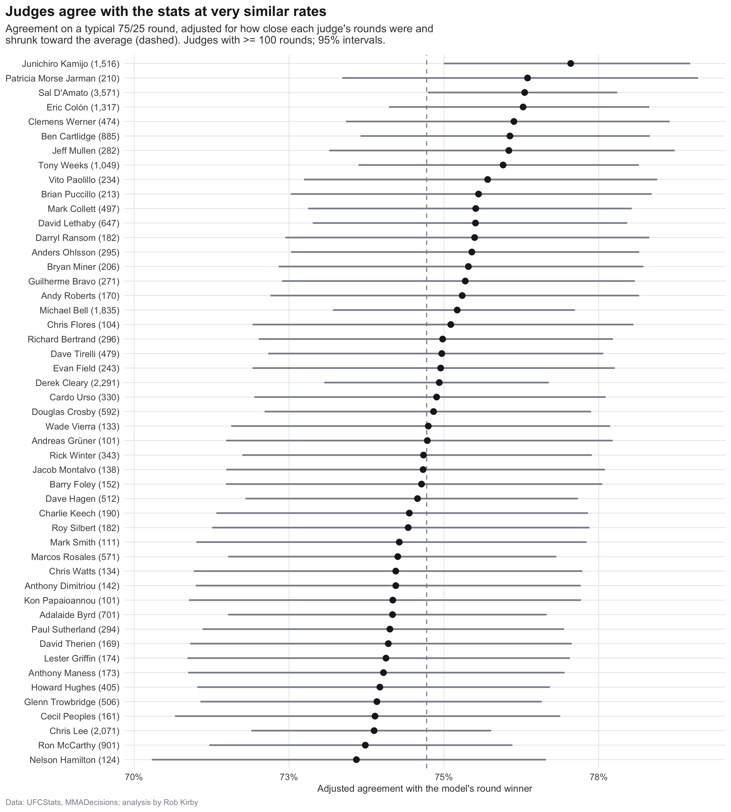

Show code
plot_judge_agreement(ja)
How individual judges and the judging pool relate to the statistics
Everything here measures agreement with a statistical model. The model sees only counted statistics, not damage, power or octagon control. A judge who agrees with it less often may simply be weighing those things more. Nothing on this page says any judge is bad, biased or acting in bad faith.
Every judge-level estimate uses judges with at least 100 scored rounds and shrinkage (mixed models with judge random effects), so small samples don’t produce extreme rankings. Intervals are 95%.
Raw agreement rates mislead, because some judges happen to score more close rounds than others. So agreement is measured on a typical round (the model favours one fighter 75/25), adjusted for how close each judge’s rounds were.
Across 49 judges, adjusted agreement ranges only from 73.6% to 77.0% (league average 74.7%), and only 2 judges have intervals that exclude the average. Once you account for how hard their rounds were, judges agree with the stats at very similar rates.
Each judge gets their own multiplier on the striking and grappling parts of the round model (takedowns, control time, submission attempts, reversals).
10 of 49 judges have intervals that exclude the league average, more than the 2–3 you’d expect by chance. So there’s real, if modest, variation in how much individual judges reward grappling relative to striking.
On UFCStats the red-corner fighter (usually the more established fighter, or the champion) is listed first, but only from March 21, 2010. Before that the winner was listed first, so corner analyses use only later fights.
Do bettors account for fighters who tend to win on the cards more than the stats suggest? For each fighter we computed a card premium before every fight: how much more often, on average, they had won earlier UFC decisions than the stats predicted (shrunk toward zero for fighters with few decisions).
rm |> mutate(tier = factor(tier, names(tier_cols))) |> arrange(tier) |>
transmute(Tier = tier, Decisions = n, `Official winner was the betting favourite` = winner_was_favourite,
`Winner's average market probability` = mean_winner_mkt) |>
gt() |> fmt_percent(c(3, 4), decimals = 0) |>
tab_header(title = "Robberies don't systematically go to the favourite",
subtitle = "Decisions with closing odds (2007 onward)")| Robberies don't systematically go to the favourite | |||
| Decisions with closing odds (2007 onward) | |||
| Tier | Decisions | Official winner was the betting favourite | Winner's average market probability |
|---|---|---|---|
| Clean | 2597 | 70% | 58% |
| Close / defensible | 583 | 59% | 54% |
| Questionable | 341 | 51% | 51% |
| Robbery | 201 | 48% | 50% |